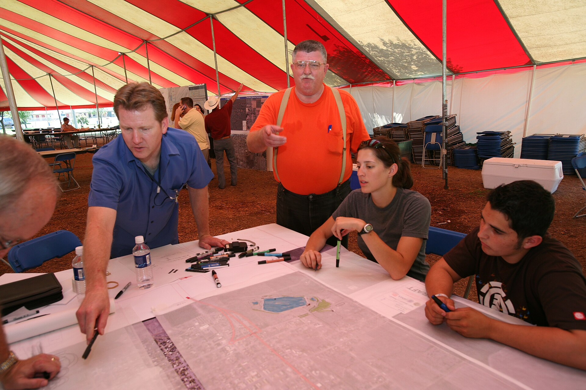

DICAS DE ESTUDO
Produtividade nos estudos
Aproveite melhor o tempo escolhendo prioridades, começando pequeno e mantendo espaço para descanso.
Introdução
Ser produtivo não é estudar sem parar: é usar o tempo disponível em tarefas que realmente ajudam a avançar, sem sacrificar sono e bem-estar. A quantidade de horas não mostra sozinha o que foi aprendido. Objetivos claros, prática e pausas fazem parte de um estudo eficiente.
1. Escolha prioridades com clareza
Anote o que precisa ser feito e considere prazo, importância e esforço. Uma prova próxima pode exigir atenção, mas um trabalho que vence depois também precisa de pequenas etapas. Se tudo parece urgente, pergunte a um professor ou responsável qual é a ordem mais adequada. Selecione uma prioridade principal e algumas tarefas menores.
Transforme cada prioridade em uma ação observável: “resolver três exercícios sobre frações”, “escrever o primeiro parágrafo” ou “revisar os conceitos da aula”. Isso facilita começar e permite perceber quando a etapa terminou.
2. Como começar quando dá vontade de adiar
Procrastinação pode aparecer quando uma tarefa parece difícil, longa, confusa ou desagradável. Em vez de esperar a motivação chegar, reduza a barreira inicial: abra o caderno, leia o enunciado e trabalhe por cinco minutos. Depois desse começo, decida se continua ou faz uma pausa breve.
Divida tarefas grandes em etapas com prazos próprios. Um trabalho pode virar: entender o tema, escolher fontes indicadas pelo professor, separar ideias, escrever um rascunho, revisar e entregar. Começar cedo dá tempo para pedir ajuda se algo não estiver claro.
3. Constância sem exigir perfeição
Uma rotina curta e repetível costuma ser mais sustentável do que sessões longas feitas raramente. Escolha um horário provável e associe o início a um hábito que já existe, como chegar da escola, lanchar e então fazer um bloco curto. Se perder um dia, retome no próximo horário possível; não precisa compensar com uma maratona.
Use blocos de foco e pausas ajustados à tarefa. Ao final, marque o que concluiu e anote o próximo passo para facilitar a retomada. Reconhecer progresso ajuda a manter o ritmo mesmo quando ainda falta bastante.
4. Equilíbrio, lazer e hábitos que roubam tempo
Reserve espaço para descanso, convivência e atividades de que gosta. Pausas não são prêmio apenas depois de terminar tudo: são parte de um ritmo possível. Observe hábitos que interrompem o estudo, como abrir redes sociais a cada poucos minutos, organizar materiais repetidamente sem começar ou copiar anotações sem verificar o que compreendeu.
Escolha uma mudança de cada vez: silenciar notificações durante um bloco, deixar o celular longe ou limitar a organização inicial a alguns minutos. Se uma estratégia não funcionar, investigue a causa e tente outra em vez de se rotular como incapaz.
5. Um plano de 40 minutos
- 2 minutos: escolher uma questão específica para resolver.
- 20 minutos: trabalhar sem notificações e marcar dúvidas.
- 5 minutos: levantar, alongar e beber água.
- 10 minutos: conferir respostas e corrigir um erro.
- 3 minutos: anotar o que avançou e o próximo passo.
Ajuste os tempos conforme sua concentração e a tarefa. Se a sessão terminar antes de concluir, anote onde parou. Se estiver aprendendo algo novo, pode ser melhor reservar mais tempo para compreender exemplos.
Erros comuns
- Fazer listas enormes sem definir prioridade.
- Usar muitas horas como único indicador de sucesso.
- Esperar a motivação perfeita ou retirar todo o lazer para compensar atrasos.
Resumo
Priorize, quebre tarefas, comece com uma ação pequena e faça pausas. Produtividade saudável é progresso que cabe na vida real.

Conclusão
Hoje, escolha uma tarefa e deixe explícito qual é o primeiro passo. Um começo pequeno pode transformar uma obrigação vaga em algo possível. Mantenha a constância com flexibilidade e lembre-se: estudar bem também inclui saber descansar.